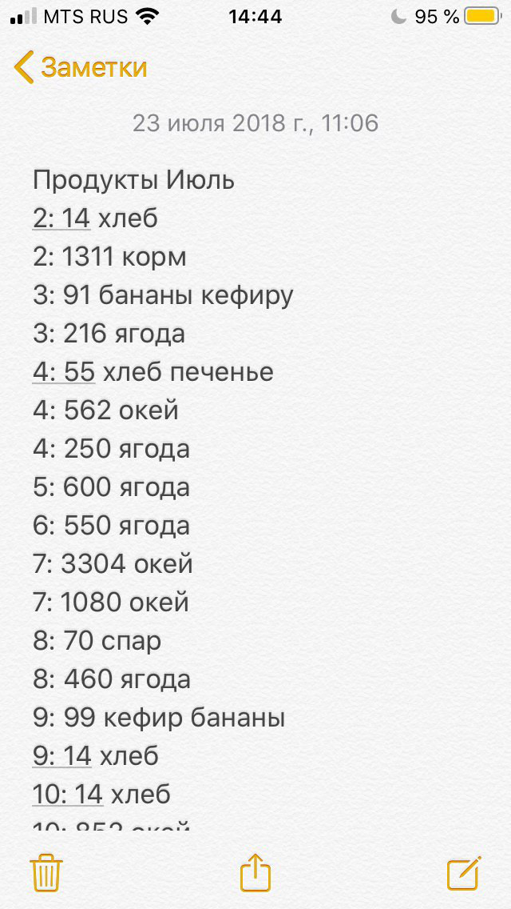
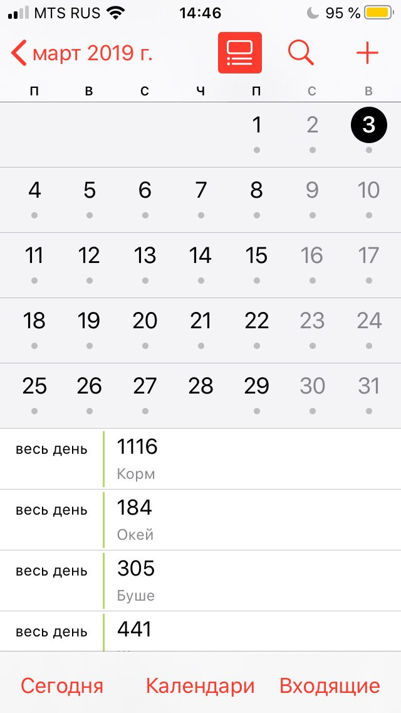
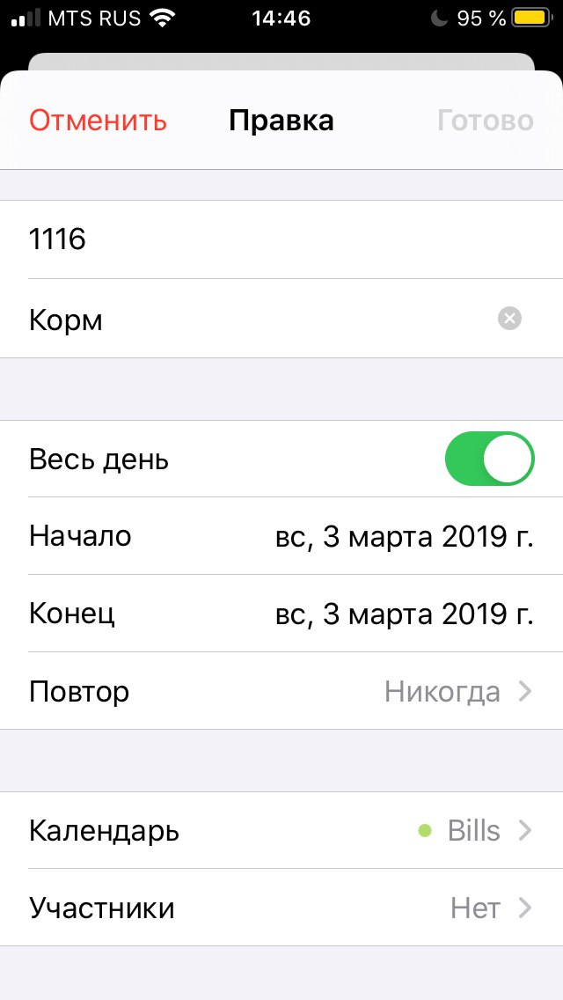
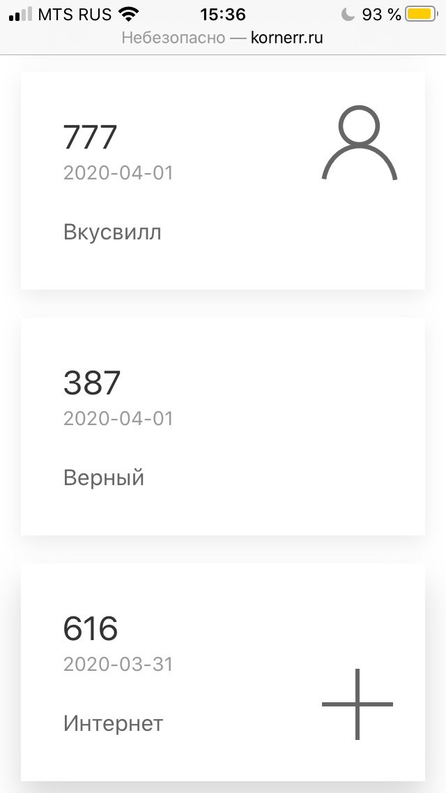

In the news...
Why I keep track of spendings in a personal app made with Git+JS
2020-05-03 00:00

In this article Michael shares his experience of using Git+JS.
Hi, folks, let me share my experience of creating an application to keep track of my spendings. Specifically, let me do it by answering the following questions:
- Why keep track of spendings in an application?
- Why did I create the application as a personal project?
- Why does the project use Git+JS?
1. Why keep track of spendings in an application?
I, like many people out there, wanted to become rich and successful. To become rich, one is often advised to run a personal budget, that's what I started to do several years ago. I'd like to point out that running my personal budget hasn't made me rich and successful, and I increased income simply by moving to the capital of my home country.
I think I started to run the budget somewhere around 2012. By that time I already had a professional programmer deformation, which can be described as "made by someone else = bad" formula and is usually manifested by a strong desire to rewrite everything from scratch. However, I had no experience with budgeting back then, so I decided to try a "professional" solution and purchased YNAB (You Need A Budget) to use the application on both PC and mobile.
I tried to do my best to set out budget plans and fulfill them in the course of three years. However, somewhere around 2015 the authors released a new application version and demanded money for the upgrade, the old version was no longer functioning. I had to choose one of the options:
- Pay for the upgraded version and use a completely new "shiny" user interface.
- Stop their ripoff, keep my money and lose the history of spendings.
I concluded that:
- I already paid for the application;
- the old version was suitable for me;
- I did not ask for an upgrade;
- if I would know I have to pay for each upgrade, I would have never purchased their application in the first place;
- I didn't want to sponsor this boorishness;
so I stopped the ripoff and lost my history of spendings.
This was a very disappointing situation for me, so I stopped tracking my spendings for about a year. However, I was once experiencing a "painful synchronization" (also known as "figuring things out" with a wife). I failed to defend myself against a financial vocal attack like "you're a waster, you always waste money on junk". Then I realized I really need to keep track of my spendings.
This time I decided not to repeat my mistake of giving all my data to someone with the risk of losing it, so I started to track my spendings with simple phone notes. The format was simple and looked like this:

I used the notes solely on the phone until mid-2018. Then, a new need arose: I wanted to be able to work on my spendings from a PC to analyze them. I took the time to see through the solutions that would allow me to work with my spendings on both PC and mobile free of charge. A calendar turned out to be such a solution:


I used a Google account to access Apps Script (a clone of JavaScript) to analyze the spendings. Working with spendings in Apps Script turned out to be quite daunting because calendar records are not designed to host spendings. Data ownership question was still unresolved: my data was still dusting on an unknown server I don't control, and I could only access my data through an API, which might change in the future by someone else's decision.
While I was using a calendar, I've had the following ideas frequently visiting me:
- it would be nice to keep all my data in Git to be able to easily analyze the spendings;
- it would be nice to have a convenient user interface without all the noise that prevents me from quickly adding a record.
Autumn 2019 I discovered Isomorphic-Git, which allows JavaScript to work with Git, quickly verified the ability to work with Git, and realized I found my Holy Grail. Recently I've finished creating the first version of GitBudget application, you can see its functionality here:
That's how the spendings look like on my phone now:

Git data looks like this: https://gitlab.com/kornerr/git-budget-sample-data/-/blob/me/gb.log
Let me highlight a few important issues:
- Git repository above reflects actions performed in the video above;
- I keep my spendings in a private repository, you should do the same;
- the application runs completely on the device and has no back-end: GitHub Pages hosting is used;
- the application talks to the outside world only during synchronization with Git;
- password is kept by a browser, the application only uses it for synchronization with Git;
- the application should be loaded over HTTP because the currently used Isomorphic-Git version (0.70.0) makes some requests (metadata) to Git over HTTP, and browsers prohibit HTTP requests from HTTPS nowadays.
2. Why did I create the application as a personal project?
I spent 40 hours of my life during the first quarter of 2020, i.e., on average, I worked for about half an hour each day.
Personal projects have the following benefits over those done at work:
- You can do whatever you want and learn from your mistakes.
- Nobody's breathing down your neck and restricting your fantasy.
- The above two points keep you calm and give you the strength to perform any stupid activity that might be required at work.
- Mistakes you own drastically widen your horizons.
Personal projects have drawbacks, too:
- Nobody in the world cares about your project but you.
- Nobody would pay you for your project.
- You have to find time to do the project every day.
- Your wife won't thank you for the project, even if she would use it herself.
It's easy to note that all drawbacks of the personal project are balanced with the benefits of the work project. And all drawbacks of the work project are balanced with the benefits of the personal project. Yin and Yang.
3. Why does the project use Git+JS?
Keeping data in Git instead of an unknown back-end/API has the following benefits:
- Git is the most widespread solution for decentralized source version control among developers, i.e., almost every developer has experience with Git.
- You don't need a new API to work with Git: you just work with files.
- There are numerous services offering Git free of charge if you're not too crazy about security and don't want to pay for the service.
- Of course, a Git service provider might be acquired by a large corporation one day, however, it's easy to move your Git data wherever you want.
- For maximum security you can always host your own Git server.
Usage of JS with HTML/CSS over Swift/Kotlin/C#/Python has the following benefits:
- Your application runs everywhere: PC, tablet, mobile phone.
- You don't need to pass AppStore reviews to get to every device.
- HTML/CSS/JS standards are international, so no single company may stop supporting it or change its API; this may result in backward compatibility of 20 years or more.
- Since there's no back-end, all logic resides in JS executed on the client, so you can save the version of the application that best suits you and forget about recurrent updates that usually only hamper usability.
GitBudget is the first attempt to see what Git+JS can do. I can only imagine the possibilities lying ahead.